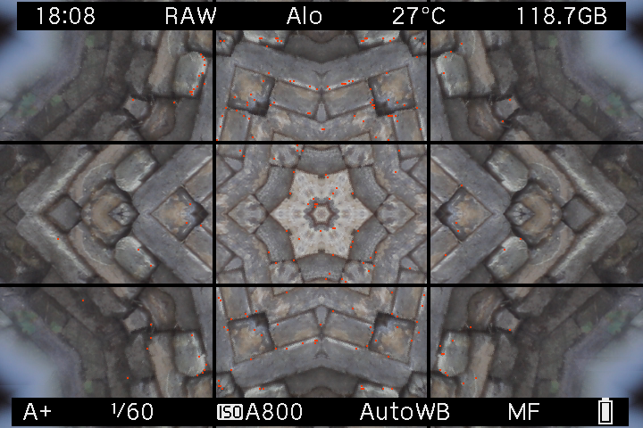
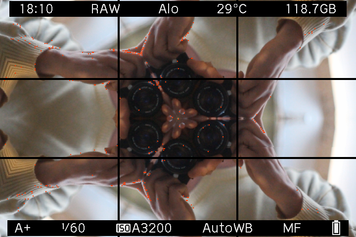
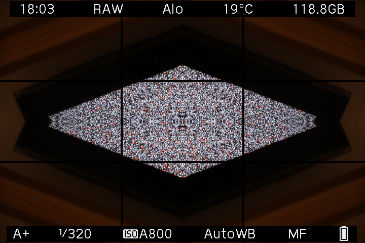
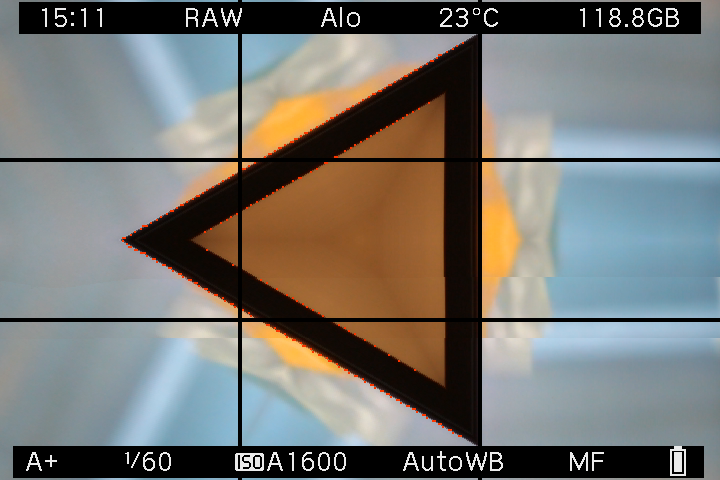
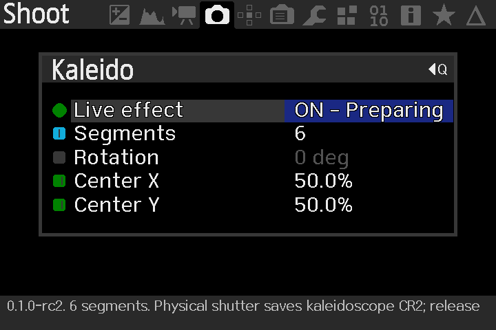

ANOTHER WAY TO SEE · EOS M EXPERIMENT Nº 02
Turn the
ordinary around.
One little piece of the world.
A whole new way to look at it.
A standalone Magic Lantern module.
By Max Seelig / MAXmade ↗.
Find your own symmetry.
01 / THE PLAYGROUNDYour photos stay in your browser.
Browser illustration · The starting scene is AI-generated. This is an RGB demonstration, not a photo from the camera. The module uses no AI.
02 / THROUGH YOUR VIEWFINDER
A new module.
A familiar camera.
Kaleido is its own experiment: its own menu, its own settings, and its own kaleido.mo.
Choose a wedge, rotate it, move the center. The camera implementation brings the pattern into LiveView and includes a Bayer-preserving native Canon RAW capture path.
0.1.0 · First public release. For the original EOS M, Canon 2.0.2 and Magic Lantern dev 2025-06-20. Camera-tested by the maker: this release preserves the rc4 implementation that passed testing on the EOS M.
Download Kaleido 0.1.0 ↓Read the included instructions. Enable one MAXmade effect module at a time. Release notes & checksums ↗
From the EOS M.










Actual EOS M screen captures, in lossless WebP at the original 720 × 480 size. The settings screenshot shows the earlier 0.1.0-rc2 menu.
03 / READY WHEN YOU ARE
From download
to viewfinder.
A small module for a camera you already know.
- Start with Magic Lantern. You need the original EOS M, Canon 2.0.2 and ML dev 2025-06-20 / EOSM.202. Other models and builds are unsupported.
- Copy the module. Download and unzip the release. With the camera OFF, copy
ML/MODULES/kaleido.moto the card. Keep your existing Magic Lantern core. - Enable it and restart. In ML's Modules tab, disable other MAXmade effect modules, enable Kaleido, then power OFF and restart.
- Compose. Then press the shutter. Use A+, Auto ISO, Canon RAW, single-shot, native 1× LCD and Global Draw ON. Open Shoot → Kaleido, switch Live effect ON and close the menu. Release the shutter between shots and let processing finish.
04 / A FEW THINGS TO KNOW
Curious?
What is Magic Lantern?
Magic Lantern is a free, open-source extension for supported Canon cameras. It runs from the memory card alongside Canon's software, adding tools made by an independent community. Install a compatible version first: EOS M builds & installation ↗.
Does the effect end up in the RAW photo?
Yes. Kaleido transforms whole Bayer cells in the native Canon CR2 capture path; it is more than a LiveView overlay. The playground above illustrates the geometry in browser RGB. It does not simulate sensor data.
Can I use autofocus and Auto ISO?
Yes, through the normal Canon shutter workflow. Use the supported A+ / Auto ISO setup, compose in LiveView and release the physical shutter between single shots.
Will it remember my settings?
Yes. Live effect, segments, rotation and both center controls save automatically in Kaleido's own preference files. Your rc4 settings carry over.
What about video, bursts or another camera?
This release is for single-shot Canon RAW on the original EOS M with the versions listed above. Video, bursts, remote triggers and long exposures are outside the supported workflow.
Why won't LiveView start?
Check the camera and Magic Lantern versions, native 1× LCD and Global Draw. Disable other MAXmade effects in the Modules tab and restart, even if their effect switches were OFF. See the troubleshooting guide or report an issue.
Who makes Kaleido?
Max Seelig, at MAXmade ↗. The module is independent of Canon and released under GPL-2.0-or-later. Explore the source code or read the credits.